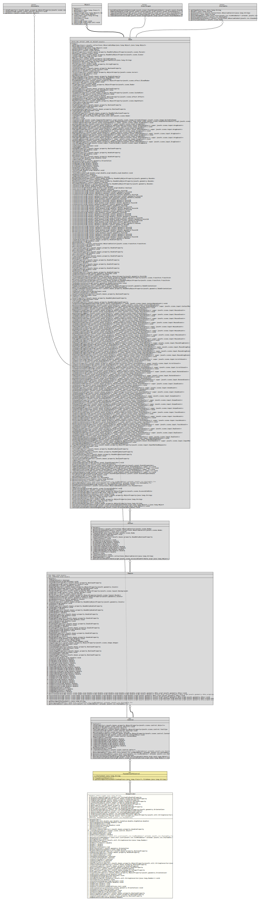

- All Implemented Interfaces:
Styleable,EventTarget,Skinnable
The RangeSlider control is simply a JavaFX
Slider
control with support for two 'thumbs', rather than one. A thumb is the
non-technical name for the draggable area inside the
Slider/RangeSlider that allows for a value to be set.
Because the RangeSlider has two thumbs, it also has a few additional rules and user interactions:
- The 'lower value' thumb can not move past the 'higher value' thumb.
- Whereas the
Slidercontrol only has onevalueproperty, theRangeSliderhas alow valueand ahigh valueproperty, not surprisingly represented by the 'low value' and 'high value' thumbs. - The area between the low and high values represents the allowable range. For example, if the low value is 2 and the high value is 8, then the allowable range is between 2 and 8.
- The allowable range area is rendered differently. This area is able to be dragged with mouse/touch input to allow for the entire range to be modified. For example, following on from the previous example of the allowable range being between 2 and 8, if the user drags the range bar to the right, the low value will adjust to 3, and the high value 9, and so on until the user stops adjusting.
Code Samples
Instantiating a RangeSlider is simple. The first decision is to
decide whether a horizontal or a vertical track is more appropriate. By
default RangeSlider instances are horizontal, but this can be
changed by setting the
orientation
property.
Once the orientation is determined, the next most important decision is
to determine what the
min/max
and default
low/high
values are. The min/max values represent the smallest and
largest legal values for the thumbs to be set to, whereas the
low/high values represent where the thumbs are currently,
within the bounds of the min/max values. Because all four
values are required in all circumstances, they are all required parameters
to instantiate a RangeSlider: the
constructor
takes four doubles, representing min, max, lowValue
and highValue (in that order).
For example, here is a simple horizontal RangeSlider that has a
minimum value of 0, a maximum value of 100, a low value of 10 and a high
value of 90:
final RangeSlider hSlider = new RangeSlider( 0, 100, 10, 90 );To create a vertical slider, simply do the following:
final RangeSlider vSlider = new RangeSlider( 0, 200, 30, 150 );
vSlider.setOrientation( Orientation.VERTICAL );This code creates a vertical RangeSlider with a min
value of 0, a max value of 200, a low value of 30, and a
high value of 150.
- Author:
- Thomas Thrien (thomas.thrien@tquadrat.org)
- Version:
- $Id: RangeSlider.java 1121 2024-03-16 16:51:23Z tquadrat $
- Since:
- 0.4.6
- See Also:
- Inspired through:
- ControlsFX Project
- UML Diagram
-

UML Diagram for "org.tquadrat.foundation.fx.control.RangeSlider"
{kind=link}
-
Property Summary
PropertiesTypePropertyDescriptionfinal DoublePropertyReturns a reference to the property that holds the amount by which to adjust the slider if the track of the slider is clicked.final BooleanPropertyReturns a reference to the property that indicates a change to the high value of thisRangeSlider.final DoublePropertyReturns a reference to the property that holds the high value.final ObjectProperty<StringConverter<Number>> Returns a reference to the property that holds theStringConverterthat is used to format the tick mark labels.final BooleanPropertyReturns a reference to the property that indicates a change to the low value of thisRangeSlider.final DoublePropertyReturns a reference to the property that holds the low value.final DoublePropertyReturns a reference to the property that holds the unit distance between major tick marks.final DoublePropertyReturns a reference to the property that holds the maximum value for thisRangeSlider.final IntegerPropertyReturns a reference to the property that holds the number of minor ticks to place between any two major ticks.final DoublePropertyReturns a reference to the property that holds the minimum value for thisRangeSlider.final ObjectProperty<Orientation> Returns a reference to the property that holds the orientation of thisRangeSlider.final BooleanPropertyReturns a reference to the property that holds the flag that indicates that the labels for tick marks should be shown.final BooleanPropertyReturns a reference to the property that holds the flag that specifies whether theSkinimplementation should show tick marks.final BooleanPropertyReturns a reference to the property that holds the flag that indicates whether the low value/high value thumbs of theRangeSlidershould always be aligned with the tick marks.Properties inherited from class javafx.scene.control.Control
contextMenu, skin, tooltipProperties inherited from class javafx.scene.layout.Region
background, border, cacheShape, centerShape, height, insets, maxHeight, maxWidth, minHeight, minWidth, opaqueInsets, padding, prefHeight, prefWidth, scaleShape, shape, snapToPixel, widthProperties inherited from class javafx.scene.Parent
needsLayoutProperties inherited from class javafx.scene.Node
accessibleHelp, accessibleRoleDescription, accessibleRole, accessibleText, blendMode, boundsInLocal, boundsInParent, cacheHint, cache, clip, cursor, depthTest, disabled, disable, effectiveNodeOrientation, effect, eventDispatcher, focused, focusTraversable, focusVisible, focusWithin, hover, id, inputMethodRequests, layoutBounds, layoutX, layoutY, localToParentTransform, localToSceneTransform, managed, mouseTransparent, nodeOrientation, onContextMenuRequested, onDragDetected, onDragDone, onDragDropped, onDragEntered, onDragExited, onDragOver, onInputMethodTextChanged, onKeyPressed, onKeyReleased, onKeyTyped, onMouseClicked, onMouseDragEntered, onMouseDragExited, onMouseDragged, onMouseDragOver, onMouseDragReleased, onMouseEntered, onMouseExited, onMouseMoved, onMousePressed, onMouseReleased, onRotate, onRotationFinished, onRotationStarted, onScrollFinished, onScroll, onScrollStarted, onSwipeDown, onSwipeLeft, onSwipeRight, onSwipeUp, onTouchMoved, onTouchPressed, onTouchReleased, onTouchStationary, onZoomFinished, onZoom, onZoomStarted, opacity, parent, pickOnBounds, pressed, rotate, rotationAxis, scaleX, scaleY, scaleZ, scene, style, translateX, translateY, translateZ, viewOrder, visible -
Nested Class Summary
Nested ClassesModifier and TypeClassDescriptionprotected static final classThe styleable properties forRangeSlider. -
Field Summary
FieldsModifier and TypeFieldDescriptionstatic final StringThe default style class forRangeSliderinstances: "range-slider".private static final PseudoClassThe CSS pseudo class for the horizontal orientation of aRangeSlider.private final StyleableDoublePropertyThe property for the amount by which to adjust the slider if the track of the slider is clicked.private final BooleanPropertyThe property that indicates a change to the high value of thisRangeSlider.private final DoublePropertyThe high value property.private final BooleanPropertyThe property that indicates a change to the low value of thisRangeSlider.private final DoublePropertyThe low value property.private final StyleableDoublePropertyThe property for the unit distance between major tick marks.private final DoublePropertyThe property for the maximum value of thisRangeSlider.private final StyleableIntegerPropertyThe property for the number of minor ticks to place between any two major ticks.private final DoublePropertyThe property for the maximum value of thisRangeSlider.private final StyleableObjectProperty<Orientation> The property that holds the orientation of thisRangeSlider.private final StyleableBooleanPropertyThe property for the flag that indicates whether the labels for the tick marks are shown or not.private final StyleableBooleanPropertyThe property that holds the flag that specifies whether theSkinimplementation should show tick marks for thisRangeSlider.private final StyleableBooleanPropertyThe property for the flag that controls whether the thumbs will snap to the tick marks.private final ObjectProperty<StringConverter<Number>> The property for the tick label formatter.private static final PseudoClassThe CSS pseudo class for the vertical orientation of aRangeSlider.Fields inherited from class javafx.scene.layout.Region
USE_COMPUTED_SIZE, USE_PREF_SIZEFields inherited from class javafx.scene.Node
BASELINE_OFFSET_SAME_AS_HEIGHT -
Constructor Summary
ConstructorsConstructorDescriptionCreates a newRangeSliderinstance using default values of 0.0, 0.25, 0.75 and 1.0 for min/lowValue/highValue/max, respectively.RangeSlider(double min, double max, double lowValue, double highValue) Instantiates a default, horizontalRangeSliderinstance with the specified min/max/low/high values. -
Method Summary
Modifier and TypeMethodDescriptionfinal voidadjustHighValue(double newHigh) private final voidAdjusts the high value.final voidadjustLowValue(double newLow) private final voidAdjusts the low value.private final voidEnsures thatminis always <max, that the currentvalueis always somewhere between the two, and that ifsnapToTicksis set then thevaluewill always be set to align with a tick mark.final DoublePropertyReturns a reference to the property that holds the amount by which to adjust the slider if the track of the slider is clicked.protected final Skin<?> final voidDecrements the high value by the block increment amount.final voidDecrements the low value by the block increment amount.final doubleReturns the amount by which to adjust the slider if the track of the slider is clicked.static List<CssMetaData<? extends Styleable, ?>> Gets theCssMetaDataassociated with this class, which may include theCssMetaDataof its super classes.final List<CssMetaData<? extends Styleable, ?>> final doubleReturns the current high value for the range slider.final StringConverter<Number> Returns the tick label formatter.final doubleReturns the current low value for the range slider.final doubleReturns the unit distance between major tick marks.final doublegetMax()Returns the maximum value for thisRangeSlider.final doublegetMin()Returns the minimum value for thisRangeSlider.final intReturns the number of minor ticks to place between any two major ticks.final OrientationReturns the orientation of theRangeSlider.final Stringfinal BooleanPropertyReturns a reference to the property that indicates a change to the high value of thisRangeSlider.final DoublePropertyReturns a reference to the property that holds the high value.final voidIncrements the high value by the block increment amount.final voidIncrements the low value value by the block increment amount.final booleanReturns whether the high value of thisRangeSlideris currently changing.final booleanReturns whether the low value of thisRangeSlideris currently changing.final booleanReturns the flag indicating whether labels of tick marks are being shown.final booleanReturns the flag indication whether the tick marks are shown.final booleanReturns the flag that controls whether the thumbs will snap to the tick marks.final ObjectProperty<StringConverter<Number>> Returns a reference to the property that holds theStringConverterthat is used to format the tick mark labels.final BooleanPropertyReturns a reference to the property that indicates a change to the low value of thisRangeSlider.final DoublePropertyReturns a reference to the property that holds the low value.final DoublePropertyReturns a reference to the property that holds the unit distance between major tick marks.final DoublePropertyReturns a reference to the property that holds the maximum value for thisRangeSlider.final IntegerPropertyReturns a reference to the property that holds the number of minor ticks to place between any two major ticks.final DoublePropertyReturns a reference to the property that holds the minimum value for thisRangeSlider.final ObjectProperty<Orientation> Returns a reference to the property that holds the orientation of thisRangeSlider.final voidsetBlockIncrement(double value) Sets the amount by which to adjust the slider if the track of the slider is clicked.final voidsetHighValue(double high) final voidsetHighValueChanging(boolean flag) Call this when high value is changing.final voidsetLabelFormatter(StringConverter<Number> formatter) Sets the tick label formatter.final voidsetLowValue(double low) final voidsetLowValueChanging(boolean flag) Call this when the low value is changing.final voidsetMajorTickUnit(double tickUnit) Sets the unit distance between major tick marks.final voidsetMax(double max) Sets the maximum value for thisRangeSlider.final voidsetMin(double min) Sets the minimum value for thisRangeSlider.final voidsetMinorTickCount(int numberOfTicks) Sets the number of minor ticks to place between any two major ticks.final voidsetOrientation(Orientation orientation) Sets the orientation of theRangeSlider.final voidsetShowTickLabels(boolean flag) Sets whether labels of tick marks should be shown or not.final voidsetShowTickMarks(boolean flag) Sets whether tick marks should be shown or not.final voidsetSnapToTicks(boolean flag) Sets the flag that controls whether the thumbs will snap to the tick marks.final BooleanPropertyReturns a reference to the property that holds the flag that indicates that the labels for tick marks should be shown.final BooleanPropertyReturns a reference to the property that holds the flag that specifies whether theSkinimplementation should show tick marks.final BooleanPropertyReturns a reference to the property that holds the flag that indicates whether the low value/high value thumbs of theRangeSlidershould always be aligned with the tick marks.private final doublesnapValueToTicks(double value) Aligns the given value with the nearest tick mark value.Methods inherited from class org.tquadrat.foundation.fx.internal.FoundationFXControl
getUserAgentStylesheetMethods inherited from class javafx.scene.control.Control
computeMaxHeight, computeMaxWidth, computeMinHeight, computeMinWidth, computePrefHeight, computePrefWidth, contextMenuProperty, executeAccessibleAction, getBaselineOffset, getContextMenu, getCssMetaData, getInitialFocusTraversable, getSkin, getTooltip, isResizable, layoutChildren, queryAccessibleAttribute, setContextMenu, setSkin, setTooltip, skinProperty, tooltipPropertyMethods inherited from class javafx.scene.layout.Region
backgroundProperty, borderProperty, cacheShapeProperty, centerShapeProperty, getBackground, getBorder, getHeight, getInsets, getMaxHeight, getMaxWidth, getMinHeight, getMinWidth, getOpaqueInsets, getPadding, getPrefHeight, getPrefWidth, getShape, getWidth, heightProperty, insetsProperty, isCacheShape, isCenterShape, isScaleShape, isSnapToPixel, layoutInArea, layoutInArea, layoutInArea, layoutInArea, maxHeight, maxHeightProperty, maxWidth, maxWidthProperty, minHeight, minHeightProperty, minWidth, minWidthProperty, opaqueInsetsProperty, paddingProperty, positionInArea, positionInArea, prefHeight, prefHeightProperty, prefWidth, prefWidthProperty, resize, scaleShapeProperty, setBackground, setBorder, setCacheShape, setCenterShape, setHeight, setMaxHeight, setMaxSize, setMaxWidth, setMinHeight, setMinSize, setMinWidth, setOpaqueInsets, setPadding, setPrefHeight, setPrefSize, setPrefWidth, setScaleShape, setShape, setSnapToPixel, setWidth, shapeProperty, snappedBottomInset, snappedLeftInset, snappedRightInset, snappedTopInset, snapPosition, snapPositionX, snapPositionY, snapSize, snapSizeX, snapSizeY, snapSpace, snapSpaceX, snapSpaceY, snapToPixelProperty, widthPropertyMethods inherited from class javafx.scene.Parent
getChildren, getChildrenUnmodifiable, getManagedChildren, getStylesheets, isNeedsLayout, layout, lookup, needsLayoutProperty, requestLayout, requestParentLayout, setNeedsLayout, updateBoundsMethods inherited from class javafx.scene.Node
accessibleHelpProperty, accessibleRoleDescriptionProperty, accessibleRoleProperty, accessibleTextProperty, addEventFilter, addEventHandler, applyCss, autosize, blendModeProperty, boundsInLocalProperty, boundsInParentProperty, buildEventDispatchChain, cacheHintProperty, cacheProperty, clipProperty, computeAreaInScreen, contains, contains, cursorProperty, depthTestProperty, disabledProperty, disableProperty, effectiveNodeOrientationProperty, effectProperty, eventDispatcherProperty, fireEvent, focusedProperty, focusTraversableProperty, focusVisibleProperty, focusWithinProperty, getAccessibleHelp, getAccessibleRole, getAccessibleRoleDescription, getAccessibleText, getBlendMode, getBoundsInLocal, getBoundsInParent, getCacheHint, getClip, getContentBias, getCursor, getDepthTest, getEffect, getEffectiveNodeOrientation, getEventDispatcher, getId, getInitialCursor, getInputMethodRequests, getLayoutBounds, getLayoutX, getLayoutY, getLocalToParentTransform, getLocalToSceneTransform, getNodeOrientation, getOnContextMenuRequested, getOnDragDetected, getOnDragDone, getOnDragDropped, getOnDragEntered, getOnDragExited, getOnDragOver, getOnInputMethodTextChanged, getOnKeyPressed, getOnKeyReleased, getOnKeyTyped, getOnMouseClicked, getOnMouseDragEntered, getOnMouseDragExited, getOnMouseDragged, getOnMouseDragOver, getOnMouseDragReleased, getOnMouseEntered, getOnMouseExited, getOnMouseMoved, getOnMousePressed, getOnMouseReleased, getOnRotate, getOnRotationFinished, getOnRotationStarted, getOnScroll, getOnScrollFinished, getOnScrollStarted, getOnSwipeDown, getOnSwipeLeft, getOnSwipeRight, getOnSwipeUp, getOnTouchMoved, getOnTouchPressed, getOnTouchReleased, getOnTouchStationary, getOnZoom, getOnZoomFinished, getOnZoomStarted, getOpacity, getParent, getProperties, getPseudoClassStates, getRotate, getRotationAxis, getScaleX, getScaleY, getScaleZ, getScene, getStyle, getStyleableParent, getStyleClass, getTransforms, getTranslateX, getTranslateY, getTranslateZ, getTypeSelector, getUserData, getViewOrder, hasProperties, hoverProperty, idProperty, inputMethodRequestsProperty, intersects, intersects, isCache, isDisable, isDisabled, isFocused, isFocusTraversable, isFocusVisible, isFocusWithin, isHover, isManaged, isMouseTransparent, isPickOnBounds, isPressed, isVisible, layoutBoundsProperty, layoutXProperty, layoutYProperty, localToParent, localToParent, localToParent, localToParent, localToParent, localToParentTransformProperty, localToScene, localToScene, localToScene, localToScene, localToScene, localToScene, localToScene, localToScene, localToScene, localToScene, localToSceneTransformProperty, localToScreen, localToScreen, localToScreen, localToScreen, localToScreen, lookupAll, managedProperty, mouseTransparentProperty, nodeOrientationProperty, notifyAccessibleAttributeChanged, onContextMenuRequestedProperty, onDragDetectedProperty, onDragDoneProperty, onDragDroppedProperty, onDragEnteredProperty, onDragExitedProperty, onDragOverProperty, onInputMethodTextChangedProperty, onKeyPressedProperty, onKeyReleasedProperty, onKeyTypedProperty, onMouseClickedProperty, onMouseDragEnteredProperty, onMouseDragExitedProperty, onMouseDraggedProperty, onMouseDragOverProperty, onMouseDragReleasedProperty, onMouseEnteredProperty, onMouseExitedProperty, onMouseMovedProperty, onMousePressedProperty, onMouseReleasedProperty, onRotateProperty, onRotationFinishedProperty, onRotationStartedProperty, onScrollFinishedProperty, onScrollProperty, onScrollStartedProperty, onSwipeDownProperty, onSwipeLeftProperty, onSwipeRightProperty, onSwipeUpProperty, onTouchMovedProperty, onTouchPressedProperty, onTouchReleasedProperty, onTouchStationaryProperty, onZoomFinishedProperty, onZoomProperty, onZoomStartedProperty, opacityProperty, parentProperty, parentToLocal, parentToLocal, parentToLocal, parentToLocal, parentToLocal, pickOnBoundsProperty, pressedProperty, pseudoClassStateChanged, relocate, removeEventFilter, removeEventHandler, requestFocus, resizeRelocate, rotateProperty, rotationAxisProperty, scaleXProperty, scaleYProperty, scaleZProperty, sceneProperty, sceneToLocal, sceneToLocal, sceneToLocal, sceneToLocal, sceneToLocal, sceneToLocal, sceneToLocal, sceneToLocal, screenToLocal, screenToLocal, screenToLocal, setAccessibleHelp, setAccessibleRole, setAccessibleRoleDescription, setAccessibleText, setBlendMode, setCache, setCacheHint, setClip, setCursor, setDepthTest, setDisable, setDisabled, setEffect, setEventDispatcher, setEventHandler, setFocused, setFocusTraversable, setHover, setId, setInputMethodRequests, setLayoutX, setLayoutY, setManaged, setMouseTransparent, setNodeOrientation, setOnContextMenuRequested, setOnDragDetected, setOnDragDone, setOnDragDropped, setOnDragEntered, setOnDragExited, setOnDragOver, setOnInputMethodTextChanged, setOnKeyPressed, setOnKeyReleased, setOnKeyTyped, setOnMouseClicked, setOnMouseDragEntered, setOnMouseDragExited, setOnMouseDragged, setOnMouseDragOver, setOnMouseDragReleased, setOnMouseEntered, setOnMouseExited, setOnMouseMoved, setOnMousePressed, setOnMouseReleased, setOnRotate, setOnRotationFinished, setOnRotationStarted, setOnScroll, setOnScrollFinished, setOnScrollStarted, setOnSwipeDown, setOnSwipeLeft, setOnSwipeRight, setOnSwipeUp, setOnTouchMoved, setOnTouchPressed, setOnTouchReleased, setOnTouchStationary, setOnZoom, setOnZoomFinished, setOnZoomStarted, setOpacity, setPickOnBounds, setPressed, setRotate, setRotationAxis, setScaleX, setScaleY, setScaleZ, setStyle, setTranslateX, setTranslateY, setTranslateZ, setUserData, setViewOrder, setVisible, snapshot, snapshot, startDragAndDrop, startFullDrag, styleProperty, toBack, toFront, toString, translateXProperty, translateYProperty, translateZProperty, usesMirroring, viewOrderProperty, visiblePropertyMethods inherited from class java.lang.Object
clone, equals, finalize, getClass, hashCode, notify, notifyAll, wait, wait, waitMethods inherited from interface javafx.css.Styleable
getStyleableNode
-
Property Details
-
blockIncrement
Returns a reference to the property that holds the amount by which to adjust the slider if the track of the slider is clicked. This is used when manipulating the slider position using keys. If
snapToTicksistruethen the nearest tick mark to the adjusted value will be used.- See Also:
-
highValueChanging
Returns a reference to the property that indicates a change to the high value of this
RangeSlider.When the property is set to
true, it indicates that the current high value of thisRangeSlideris changing. It provides notification that the high value is changing. Once the high value is computed, it is set back tofalse.- See Also:
-
highValue
Returns a reference to the property that holds the high value.
The high value property represents the current position of the high value thumb, and is within the allowable range as specified by the
minandmaxproperties. By default this value is 100.- See Also:
-
labelFormatter
Returns a reference to the property that holds the
StringConverterthat is used to format the tick mark labels.If
null, a default will be used.- See Also:
-
lowValueChanging
Returns a reference to the property that indicates a change to the low value of this
RangeSlider.When the property is set to
true, it indicates that the current low value of thisRangeSlideris changing. It provides notification that the low value is changing. Once the low value is computed, the property is set back tofalse.- See Also:
-
lowValue
Returns a reference to the property that holds the low value.
The low value property represents the current position of the low value thumb, and is within the allowable range as specified by the
minandmaxproperties. By default this value is 0.- See Also:
-
majorTickUnit
Returns a reference to the property that holds the unit distance between major tick marks. For example, if the min value is 0 and the max value is 100 and the
majorTickUnitis set to 25, then there would be 5 tick marks: one at position 0, one at position 25, one at position 50, one at position 75, and a final one at position 100.This value should be positive and should be a value less than the span. Out of range values are essentially the same as disabling tick marks.
- See Also:
-
max
Returns a reference to the property that holds the maximum value for this
RangeSlider.- See Also:
-
minorTickCount
Returns a reference to the property that holds the number of minor ticks to place between any two major ticks. This number should be positive or zero. Out of range values will disable minor ticks, as will a value of zero.
- See Also:
-
min
Returns a reference to the property that holds the minimum value for this
RangeSlider.- See Also:
-
orientation
Returns a reference to the property that holds the orientation of this
RangeSlider.The orientation can either be horizontal or vertical.
- See Also:
-
showTickLabels
Returns a reference to the property that holds the flag that indicates that the labels for tick marks should be shown.
Typically, a
Skinimplementation will only show labels ifshowTickMarksis alsotrue.- See Also:
-
showTickMarks
Returns a reference to the property that holds the flag that specifies whether the
Skinimplementation should show tick marks.- See Also:
-
snapToTicks
Returns a reference to the property that holds the flag that indicates whether the low value/high value thumbs of the
RangeSlidershould always be aligned with the tick marks. This is honored even if the tick marks are not shown.- See Also:
-
-
Field Details
-
DEFAULT_STYLE_CLASS
The default style class forRangeSliderinstances: "range-slider".- See Also:
-
m_BlockIncrementProperty
The property for the amount by which to adjust the slider if the track of the slider is clicked. -
m_HighValueChangingProperty
The property that indicates a change to the high value of this
RangeSlider. -
m_HighValueProperty
-
m_LowValueChangingProperty
The property that indicates a change to the low value of this
RangeSlider. -
m_LowValueProperty
-
m_MajorTickUnitProperty
The property for the unit distance between major tick marks. -
m_MaxProperty
The property for the maximum value of thisRangeSlider. -
m_MinorTickCountProperty
The property for the number of minor ticks to place between any two major ticks. -
m_MinProperty
The property for the maximum value of thisRangeSlider. -
m_OrientationProperty
The property that holds the orientation of thisRangeSlider. -
m_ShowTickLabelsProperty
The property for the flag that indicates whether the labels for the tick marks are shown or not. -
m_ShowTickMarksProperty
The property that holds the flag that specifies whether theSkinimplementation should show tick marks for thisRangeSlider. -
m_SnapToTicksProperty
The property for the flag that controls whether the thumbs will snap to the tick marks. -
m_TickLabelFormatterProperty
The property for the tick label formatter. -
HORIZONTAL_PSEUDOCLASS_STATE
The CSS pseudo class for the horizontal orientation of aRangeSlider. -
VERTICAL_PSEUDOCLASS_STATE
The CSS pseudo class for the vertical orientation of aRangeSlider.
-
-
Constructor Details
-
RangeSlider
public RangeSlider()Creates a newRangeSliderinstance using default values of 0.0, 0.25, 0.75 and 1.0 for min/lowValue/highValue/max, respectively. -
RangeSlider
Instantiates a default, horizontalRangeSliderinstance with the specified min/max/low/high values.- Parameters:
min- The minimum allowable value that theRangeSliderwill allow.max- The maximum allowable value that theRangeSliderwill allow.lowValue- The initial value for the low value in theRangeSlider.highValue- The initial value for the high value in theRangeSlider.
-
-
Method Details
-
adjustHighValue
Adjusts highValue to match the given
newHigh, or as closely as possible within the constraints imposed by theminandmaxproperties. This method also takes into account thesnapToTicksflag, which is the main difference betweenadjustHighValue()andsetHighValue().- Parameters:
newHigh- The new value.
-
adjustHighValues
Adjusts the high value.- See Also:
-
adjustLowValue
Adjusts the lowValue to match the given
newLow, or as closely as possible within the constraints imposed by theminandmaxproperties. This method also takes into account thesnapToTicksflag, which is the main difference betweenadjustLowValue()andsetLowValue().- Parameters:
newLow- The new value.
-
adjustLowValues
Adjusts the low value.- See Also:
-
adjustValues
Ensures thatminis always <max, that the currentvalueis always somewhere between the two, and that ifsnapToTicksis set then thevaluewill always be set to align with a tick mark. -
blockIncrementProperty
Returns a reference to the property that holds the amount by which to adjust the slider if the track of the slider is clicked. This is used when manipulating the slider position using keys. If
snapToTicksistruethen the nearest tick mark to the adjusted value will be used.- Returns:
- The property reference.
- See Also:
-
createDefaultSkin
- Overrides:
createDefaultSkinin classControl
-
decrementHighValue
Decrements the high value by the block increment amount. -
decrementLowValue
Decrements the low value by the block increment amount. -
getBlockIncrement
Returns the amount by which to adjust the slider if the track of the slider is clicked.- Returns:
- The amount by which to adjust the slider if the track of the slider is clicked.
- See Also:
-
getClassCssMetaData
Gets theCssMetaDataassociated with this class, which may include theCssMetaDataof its super classes.- Returns:
- The
CssMetaDatafor this class.
-
getControlCssMetaData
- Overrides:
getControlCssMetaDatain classControl
-
getHighValue
Returns the current high value for the range slider.- Returns:
- The high value.
-
getLabelFormatter
Returns the tick label formatter.- Returns:
- The
StringConverterthat is used as the tick label formatter.
-
getLowValue
Returns the current low value for the range slider.- Returns:
- The low value.
-
getMajorTickUnit
Returns the unit distance between major tick marks.- Returns:
- The unit distance between major tick marks.
- See Also:
-
getMax
Returns the maximum value for this
RangeSlider.100 is returned if the maximum value has never been set.
- Returns:
- The maximum value for this range slider.
-
getMin
Returns the minimum value for this
RangeSlider.0 is returned if the minimum has never been set.
- Returns:
- The minimum value for this range slider.
-
getMinorTickCount
Returns the number of minor ticks to place between any two major ticks.- Returns:
- The number of minor ticks to place between any two major ticks.
- See Also:
-
getOrientation
Returns the orientation of theRangeSlider.- Returns:
- The orientation of the
RangeSlider.Orientation.HORIZONTALis returned by default.
-
getUserAgentStylesheet
- Overrides:
getUserAgentStylesheetin classRegion
-
highValueChangingProperty
Returns a reference to the property that indicates a change to the high value of this
RangeSlider.When the property is set to
true, it indicates that the current high value of thisRangeSlideris changing. It provides notification that the high value is changing. Once the high value is computed, it is set back tofalse.- Returns:
- The property reference.
- See Also:
-
highValueProperty
Returns a reference to the property that holds the high value.
The high value property represents the current position of the high value thumb, and is within the allowable range as specified by the
minandmaxproperties. By default this value is 100.- Returns:
- The property reference.
- See Also:
-
incrementHighValue
Increments the high value by the block increment amount. -
incrementLowValue
Increments the low value value by the block increment amount. -
isHighValueChanging
Returns whether the high value of thisRangeSlideris currently changing.- Returns:
trueif the high value is currently changing, otherwisefalse.
-
isLowValueChanging
Returns whether the low value of thisRangeSlideris currently changing.- Returns:
trueif the low value is currently changing, otherwisefalse.
-
isShowTickLabels
Returns the flag indicating whether labels of tick marks are being shown.- Returns:
trueif the tick mark label are shown, otherwisefalse.
-
isShowTickMarks
Returns the flag indication whether the tick marks are shown.- Returns:
trueif the tick marks are shown, otherwisefalse.
-
isSnapToTicks
Returns the flag that controls whether the thumbs will snap to the tick marks.- Returns:
trueif the thumbs will snap to the tick marks, otherwisefalse.- See Also:
-
labelFormatterProperty
Returns a reference to the property that holds the
StringConverterthat is used to format the tick mark labels.If
null, a default will be used.- Returns:
- The property reference.
- See Also:
-
lowValueChangingProperty
Returns a reference to the property that indicates a change to the low value of this
RangeSlider.When the property is set to
true, it indicates that the current low value of thisRangeSlideris changing. It provides notification that the low value is changing. Once the low value is computed, the property is set back tofalse.- Returns:
- The property reference.
- See Also:
-
lowValueProperty
Returns a reference to the property that holds the low value.
The low value property represents the current position of the low value thumb, and is within the allowable range as specified by the
minandmaxproperties. By default this value is 0.- Returns:
- The property reference.
- See Also:
-
majorTickUnitProperty
Returns a reference to the property that holds the unit distance between major tick marks. For example, if the min value is 0 and the max value is 100 and the
majorTickUnitis set to 25, then there would be 5 tick marks: one at position 0, one at position 25, one at position 50, one at position 75, and a final one at position 100.This value should be positive and should be a value less than the span. Out of range values are essentially the same as disabling tick marks.
- Returns:
- The property reference.
- See Also:
-
maxProperty
Returns a reference to the property that holds the maximum value for this
RangeSlider.- Returns:
- The property reference.
- See Also:
-
minorTickCountProperty
Returns a reference to the property that holds the number of minor ticks to place between any two major ticks. This number should be positive or zero. Out of range values will disable minor ticks, as will a value of zero.
- Returns:
- The property reference.
- See Also:
-
minProperty
Returns a reference to the property that holds the minimum value for this
RangeSlider.- Returns:
- The property reference.
- See Also:
-
orientationProperty
Returns a reference to the property that holds the orientation of this
RangeSlider.The orientation can either be horizontal or vertical.
- Returns:
- The property reference.
- See Also:
-
setBlockIncrement
Sets the amount by which to adjust the slider if the track of the slider is clicked.- Parameters:
value- The adjustment value.- See Also:
-
setHighValueChanging
Call this when high value is changing.- Parameters:
flag-trueif the high value is currently changing,falseotherwise.
-
setHighValue
Sets the high value for the range slider, which may or may not be clamped to be within the allowable range as specified by theminandmaxproperties.- Parameters:
high- The value.
-
setLabelFormatter
Sets the tick label formatter.- Parameters:
formatter- TheStringConverterthat is used to format the tick labels.
-
setLowValue
Sets the low value for the range slider, which may or may not be clamped to be within the allowable range as specified by theminandmaxproperties.- Parameters:
low- The value.
-
setLowValueChanging
Call this when the low value is changing.- Parameters:
flag-trueif the low value is changing,falseotherwise.
-
setMajorTickUnit
Sets the unit distance between major tick marks.- Parameters:
tickUnit- The unit distance.- See Also:
-
setMax
Sets the maximum value for thisRangeSlider.- Parameters:
max- The new value.
-
setMin
Sets the minimum value for thisRangeSlider.- Parameters:
min- The new value
-
setMinorTickCount
Sets the number of minor ticks to place between any two major ticks.- Parameters:
numberOfTicks- The number of minor ticks; should be 0 or a positive number, out of range values will disable the feature.- See Also:
-
setOrientation
Sets the orientation of theRangeSlider.- Parameters:
orientation- The orientation.
-
setSnapToTicks
Sets the flag that controls whether the thumbs will snap to the tick marks.- Parameters:
flag-trueif the thumbs snaps to the tick marks,falseif not.- See Also:
-
setShowTickLabels
Sets whether labels of tick marks should be shown or not.- Parameters:
flag-trueif the tick mark labels should be shown,falseif not.
-
setShowTickMarks
Sets whether tick marks should be shown or not.- Parameters:
flag-trueif the tick marks are shown,falseif not.
-
showTickLabelsProperty
Returns a reference to the property that holds the flag that indicates that the labels for tick marks should be shown.
Typically, a
Skinimplementation will only show labels ifshowTickMarksis alsotrue.- Returns:
- The property reference.
- See Also:
-
showTickMarksProperty
Returns a reference to the property that holds the flag that specifies whether the
Skinimplementation should show tick marks.- Returns:
- The property reference.
- See Also:
-
snapToTicksProperty
Returns a reference to the property that holds the flag that indicates whether the low value/high value thumbs of the
RangeSlidershould always be aligned with the tick marks. This is honored even if the tick marks are not shown.- Returns:
- The property reference.
- See Also:
-
snapValueToTicks
Aligns the given value with the nearest tick mark value.- Parameters:
value- The value.- Returns:
- The adjusted value.
-